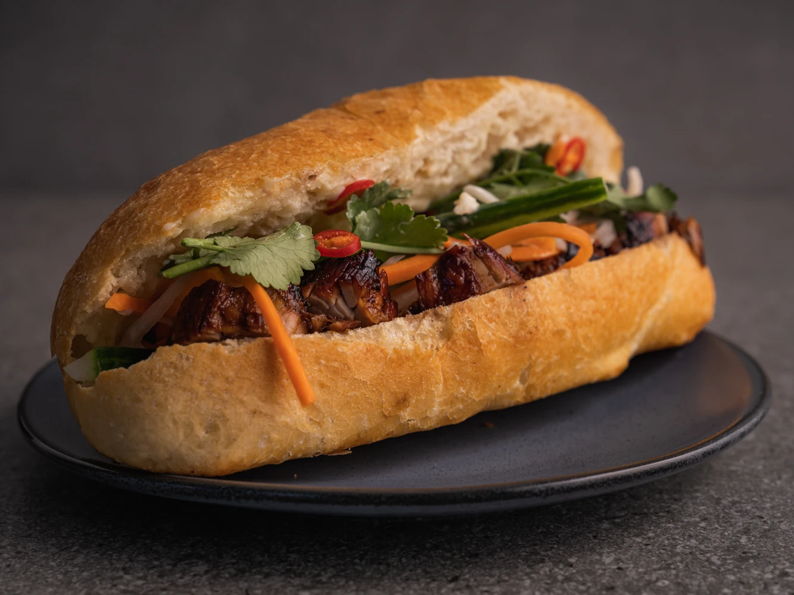

Banh Mi - Style Vietnamese Baguette
Home

Banh Mi - Style Vietnamese Baguette
These are by far the best sandwiches to serve your guests and yourself! The ingredients are fresh, delicious, popular and fills your mouth with marinated joy. You can usually find the high-caloric sandwich (variety of meat on mayonnaise) in your
local Vietnamese baguette shop but here is a hearty Vegetarian version
(if you do not use fish sauce) using portabello mushrooms.
Ingredients:
- Portobello mushroom caps and carrot.
- Olive oil.
- Salt and pepper to taste.
- Daikon (white) radish, sliced into sticks.
- Rice vinegar.
- Fresh lime juice.
- Cold water.
- Chilled lime juice.
- Nuoc mam.
- Toasted sesame oil.
- Canola oil.
- Minced garlic
- Jalapeno pepper.
- Sprigs fresh cilantro with stems.
- Medium cucumber, sliced into thin strips.
- French bread baguettes, split lengthwise.
Step:
- Preheat the oven to 450 degrees F (230 degrees C). Place the mushrooms on a baking sheet. Drizzle with a little olive oil and season with salt and pepper. Roast in the preheated oven for about 25 minutes. Cool slightly, then slice into strips.
- While the mushrooms are roasting, bring a saucepan of water to a boil. Plunge the carrot and radish sticks into the boiling water and after a few seconds, remove them and plunge them into a bowl of ice water to stop the cooking. In a separate bowl, stir together the rice vinegar, 1/2 cup of lime juice and 1/2 cup cold water. Transfer the carrot and radish to the vinegar and lime marinade and let them soak for at least 15 minutes, longer if it's convenient.
- In a small bowl, stir together the remaining lime juice, soy sauce, fish sauce, sesame oil, canola oil, 1/3 cup sugar and 1/3 cup water. This is the sandwich sauce.
- To assemble sandwiches, sprinkle a little of the sandwich sauce onto each half of the French loaves. Place the roasted mushrooms onto the bottom half of each roll and sprinkle with a little more sauce. Top with a few slices of jalapeno, a few sticks of carrot and radish (minus the marinade), cucumber, basil and cilantro. Close with the tops of the bread and serve.